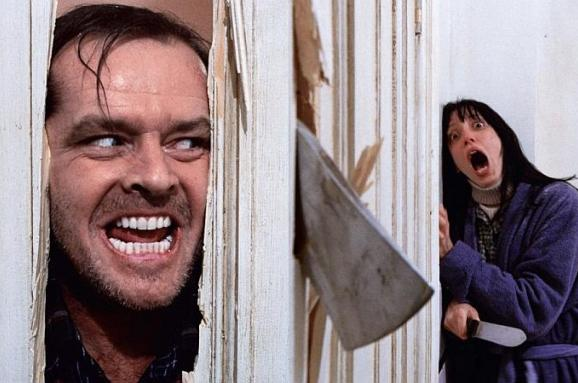
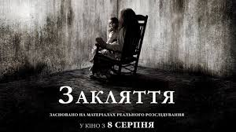
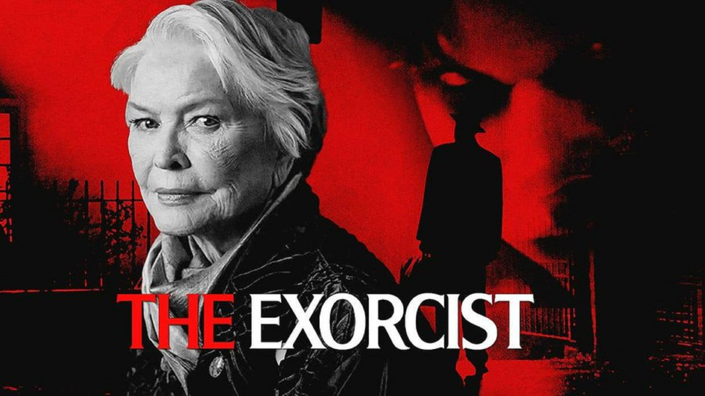
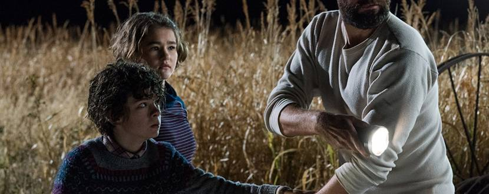
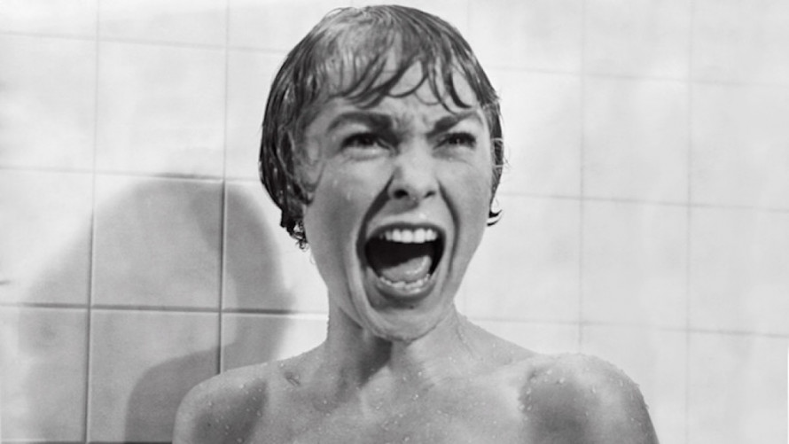
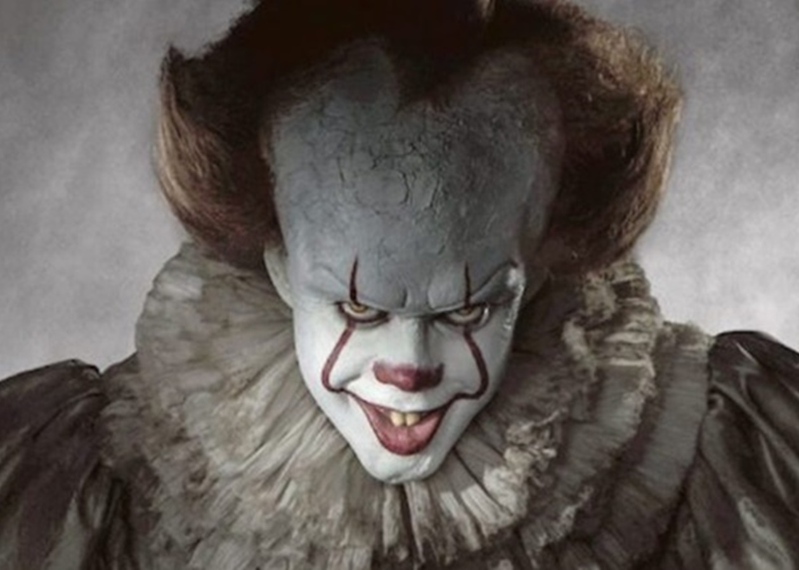
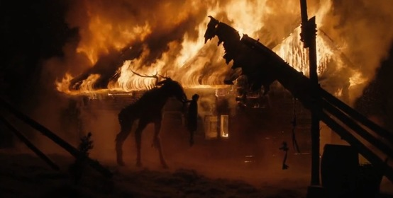
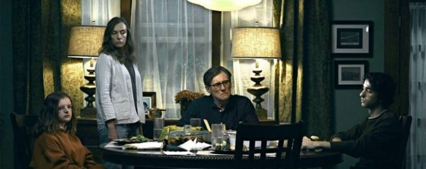
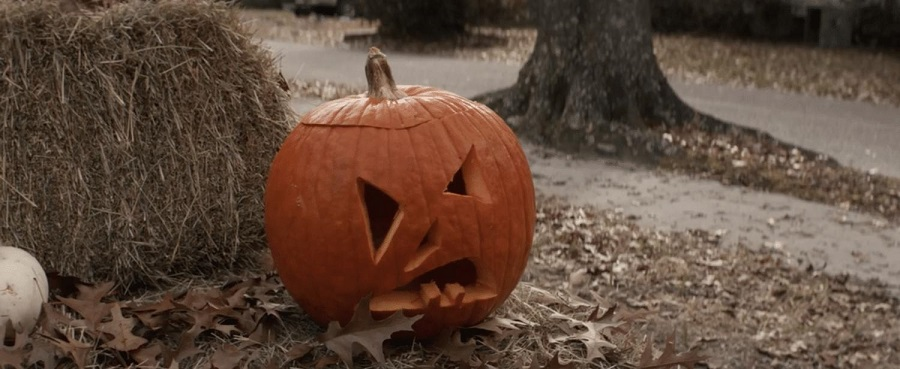

У цьому дослідженні було відібрано групу з 50 осіб, які переглянули 100 годин найрейтинговіших
фільмів
жахів за версією IMDb, Rotten Tomatoes та Reddit. Під час експерименту ретельно відстежували
частоту
серцебиття кожного учасника. Згодом було створено список, до якого увійшли 35 найстрашніших
фільмів жахів,
що викликали найбільше серцебиття у глядачів. Пропонуємо вашій увазі 10 найкращих фільмів, які
з'явилися в
результаті цього моторошного аналізу.
1. Сяйво (The Shining, 1980)
Класика Стенлі Кубрика за романом Стівена Кінга — повільне божевілля в ізоляції.

2. Закляття (The Conjuring, 2013)
Демонологічна історія на основі реальних подій. Родина Ворренів розслідує моторошний
дім.

3. Екзорцист (The Exorcist, 1973)
Дівчина, одержима демоном, та священики, що кидають виклик злу.

4. Тихе місце (A Quiet Place, 2018)
Світ, де кожен звук може стати останнім. Напружений постапокаліптичний трилер.

5. Психо (Psycho, 1960)
Гічкокова класика, що змінила жах назавжди. Іконічна сцена в душі.

6. Воно (It, 2017)
Клоун Пеннівіз тероризує дітей у маленькому містечку. Адаптація Кінга.

7. Ритуал (The Ritual, 2017)
Чотири друзів загублюються в лісі Швеції, де на них чатує давнє зло.

8. Спадковість (Hereditary, 2018)
Темна сімейна драма з окультним жахом, який наростає до божевілля.

9. Хелловін (Halloween, 1978)
Майкл Маєрс — уособлення невблаганного зла. Початок легендарної серії.

10. Астрал (Insidious, 2010)
Подорож у світ духів, щоб врятувати сина. Від творців "Пилки".
.jpg)